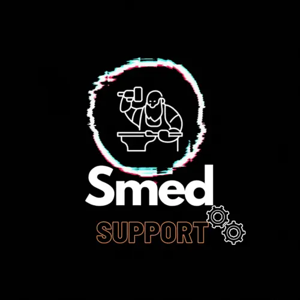

Mesa de ayuda tecnica
Atencion remota o presencial para resolver incidentes de usuarios y equipos en menor tiempo.
Nuestro servicio de soporte prioriza continuidad, respuesta rapida y trazabilidad. Atendemos incidencias de hardware, software y conectividad con enfoque preventivo.

Atencion remota o presencial para resolver incidentes de usuarios y equipos en menor tiempo.
Programamos revisiones tecnicas para reducir fallas y alargar la vida util de tus activos.
Aplicamos parches, configuraciones seguras y buenas practicas para proteger informacion critica.
Entregamos visibilidad de incidencias, tiempos de atencion y acciones de mejora continua.
Solicita una evaluacion y define un plan de soporte a tu medida.